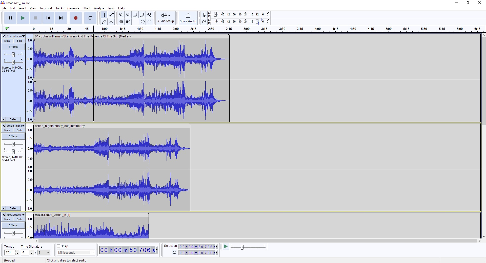

Revenge of the Sith Music Comparison
by enderdrag64
OST track analysis
In my Revenge of the Sith OST review I talked extensively about how the score was butchered, and how the OST made edits I didn't like. However, I didn't really show off in detail what I was talking about. You may be wondering, "what does any of this actually mean?", "What is a microedit?", etc.
Today, I will answer these questions by doing an in depth comparison of the commercial OST album, vs the unedited recordings taken from the game files of various LucasArts games. For this comparison I will primarily be using Star Wars The Old Republic, and Battlefront II (2005).
Let's start with track 1, "Star Wars and the Revenge of the Sith (Medley):
According to my review, this track is a combination of 4 separate cues, 1M2 Main Title, 1M3 Boys Into Battle, 1M4 They're Coming Around, and 1M5 The Elevator Scene. Let's look at the OST track vs. these cues, one by one. I'll start with 1M2 Main Title:
We can't see very much zoomed out like this, so let's zoom in.
We can see from this very clearly that the OST presents 0:00-1:17 of the cue as recorded, but at 1:17 it cuts immediately to the next cue, leaving the last 15 or so seconds (including the clean ending) unreleased. Fortunately the clean ending was available from a videogame. Actually, this cue is the same recording used in The Phantom Menace and Attack of the Clones, so those OST albums feature the same music with more of the ending as well, although they aren't clean.
Let's move onto the next cue, 1M3 Boys Into Battle:
Here we can see some obvious differences even before zooming in. The extra spikes visible on the videogame version are because of the taiko drums, which were dialed out of the OST release. Further, you can see that the OST and the cue eventually desync, which is due to all of the missing sections that were exised from the OST album.
Now let's do a comparison of the two zoomed in, after I insert blank spaces were the material was exised on the OST:
Zoomed in like this we can see very clearly that there were multiple sections where a second or two of material was trimmed, as well as that the last 45 seconds have been removed completely. In their place, the OST jump cuts straight into the next cue.
Hopefully you are starting to get an idea of the kinds of edits that occur on John Williams' OST albums. Now let's move on to the next cue, 1M4 They're Coming Around:
You'll note that I've undone the blank spaces I'm starting again with the unedited OST track rather than the one that I inserted blank spaces into, just to maintain the original timestamps.
Once again, you should see that there are multiple missing chunks, as well as no clean opening or ending. This trend really does continue throughout the entire album.
Before moving on, I should note that there's an entire cue skipped by the album here, 1M4A Get 'Em R2. Here's what that cue looks like:
Now let's take a look at the last part of track 1, which covers 1M5 The Elevator Scene:
Again, we can't see much zoomed out, so I'll zoom in with the blank spaces added:
Here we can see that there's no clean opening, and there's large chunks missing. Additionally, it's hard to tell from the screenshot but there is a substantial amount of percussion in the full cue that was dialed out of the OST album for whatever reason. At least we get a clean ending this time....
Hopefully now you understand in more detail the edits made by OST releases. These aren't unique to the Revenge of the Sith album, every John Williams made Star Wars OST has made similar edits.
Full recording recovery via videogame files
Now that we've looked at how much material is missing from the OST album, I'll do a tutorial to show off where you can actually find some of this missing material for integrating into your own edit.
For this tutorial we'll look at 1M5 The Elevator Scene again. If you want to follow along, you should have the following files: Track 1 from the official album, the file "action_highintensity_set_intothefray" from Star Wars The Old Republic, and the file "mxCISUta01_Act01_lp" from Battlefront II (2005).
Here's what it looks like with all of them loaded into Audacity (note that I've already trimmed the earlier cues from the OST track):
From here the sync for the SWTOR file with the OST looks pretty simple, and is in the later half of the cue, so I'm actually going to start with the BF2 file.
Move it up, and look or listen for a spot where it seems to sync. From a quick listening test, it sounds like only 1:07-end is from the cue we need, so I went ahead and deleted the rest.
Next up is syncing the earliest point of the BF2 file with the OST track:
At this point you'll notice that the OST track skips ahead where the BF2 file continues. You'll want to split the OST track around where it looks like the skip is (in this case, 0:13), and slide the second part to sync with the BF2 track again.
Now that we've got it synced on both ends, we can copy paste the missing segment from the BF2 file into the OST track:
If you synced it correctly, the track should play seamlessly with no obvious edit on either side. This is because we've just undone an edit from the OST, and restored the original recording, at least for this segment.
Now we can do it again with the next segment, this time at 0:30.
This time, you'll note there's no obvious sync back into the OST track, because they unfortunately don't exactly overlap. Technically they do, but the video game material segues to something else at this point. You can sort of fix this with a fade out, but ideally you'd want to search for another videogame file to patch this section.
For this tutorial, we're just going to go with a fadeout, in order to show how to deal with situations where not all of the material is available or perfect.
After the fadeout, there's only one last edited piece to restore. I recommend replacing the entirety of the rest of the cue from the 0:49 mark with the SWTOR file, this way you can get back all of the percussion that was dialed out of the SWTOR cue. There are no further microedits in either, other than the few seconds at the start that the SWTOR file restores..
With that, we can simply copy paste the remaining material into the OST track, and delete what's left. Here is the end result:
That concludes my tutorial on restoring unreleased music via videogame files. Hopefully you learned something!
© 2024 by enderdrag64-design. All rights reserved.